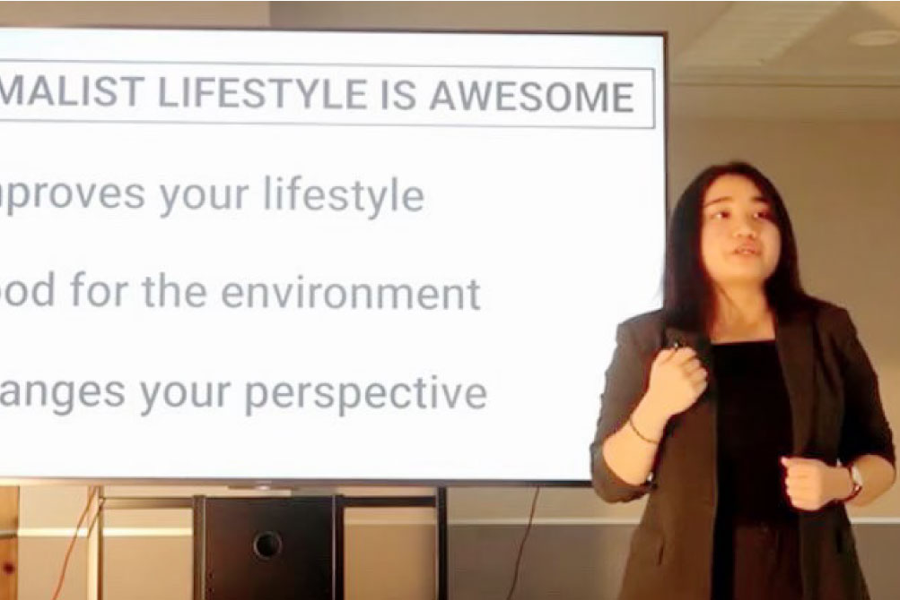

英語キャリア科
- キャリアデザインコース／海外留学コース
- グローバルビジネス・大学コース
-
海外姉妹校と連携した
多彩なグローバルプログラムにも参加
英語を活かした
「自分らしいキャリア」を築く - 英国オックスフォード大学など、テクノスカレッジの海外姉妹校と連携した各種グローバルプログラムに参加します。単に「英語を学ぶ」のではなく、国内外での活躍を視野に「英語を活かした自分らしいキャリア」を築き上げていきます。
学びPICK UP!
テクノス祭のあとも海外姉妹校との繫がりは続く～！
こんにちは。 英語キャリア科の中には、テクノス祭で姉妹校プロジェクトに関わった学生もいます。 リーダーのS君をはじめ、海外の同世代とコミュニケーションを取りたくて仕方がない仲間がいっぱい。 お互いの学校紹介...
続きを読む- 【目指せる職種】
- フロントスタッフ／フライトアテンダント／グランドスタッフ／ツアーコンダクター／営業／秘書／貿易事務／英文事務／英会話教師／翻訳者 他
- 【目指せる資格】
- TOEIC®／実用英語技能検定／「ハングル」能力検定試験／スペイン語技能検定／マイクロソフト オフィス スペシャリスト（MOS）／秘書検定／マナー・プロトコール検定 他
- 【主な就職先】
- 帝国ホテル／ミリアルリゾートホテルズ／中国東方航空／エアアジア／エアポートターミナルサービス／海外旅行会社・ホテル（ベトナム）／英会話学校／商社・通信／海外事業部関連 他
キャリアデザインコース
ネイティブ講師の指導や国際交流を通して、異文化に対応できるコミュニケーション能力を養います。鍛えた語学力や国際感覚を武器にグローバルに活躍する人をめざします。
海外留学コース
海外留学を通し、世界で起きている様々な社会問題を英語で理解しながら視野を広げます。国際社会に関心を持ち、世界で通用する実践的な英語力を養います。
グローバルビジネス・大学コース
「マーケティング・マネージメントも学びたい！」「外資系企業に就職したい！」そんな皆さんの憧れを叶えるために、テクノスの「知識・技術の専門性」と大学の「幅広い学問と教養」を学修します。
もっと大学コースを知りたい方はコチラ学びの特徴
未来を見据えた
学科オリジナルの学び
海外姉妹校ホープ大学との
語学研修プログラムで
互いに情報を交換し合う
米国・ホープ大学との語学研修プログラムに参加。現地学生によるホープ大学のバーチャルツアー、テクノス学生による英語でのキャンパス紹介など、お互いの生活を知り、同世代間での異文化交流を行っています。
自身のキャリアとともに
それを実現するための
留学プランを企画する
それぞれが目標とする英語キャリアを実現するための留学プログラムを企画し、グループごとに留学エージェントに提案。過去には、スポーツ関連団体のガイドブックを英語から日本語へ翻訳することにも挑戦しました。
身につけたスキルを
実践する学科ゼミ
基礎ゼミ
異文化理解
グローバルに活躍するために、自分たちが経験した行事・しきたり・教育制度などを海外と比較します。身近なものを題材にそれぞれの文化を研究し、対象国との違いやその背景をまとめます。
応用ゼミ
世界で成功するビジネスを創出
海外で活躍する人材の事例をもとに、世界のニーズに気づき、自らビジネスを生み出します。SNSを駆使し興味のある業界の経営者と繫がり、生の声に耳を傾けます。
身につける力&磨く力

コミュニケーション力
言語をツールとして国籍を問わず意思疎通ができるようになることで、幅広い仲間をつくります。性別、年齢に関係なく人と関わることでビジネスチャンスを広げ、自分のスキルをさらに活かすことができます。

異文化理解力
さまざまな国の人たちとの関わりをスムーズにするためには、それぞれの社会背景を知る必要があります。歴史、文化、ものの考え方などを理解することで、相手の意見を尊重し、自国と比べることができます。

行動力
チャレンジ精神旺盛に行動することで、視野は広がり、新しい可能性も増えます。海外経験を通して世界の問題に目を向け、さらに自分自身で人生を切り開いていくことができます。
在学生レポート
在学生のキャンパスライフを覗いてみよう
学び最新TOPICS
一覧へ描けるキャリア
卒業後の自分をイメージして、
描きたいキャリアを実現しよう!
「卒後ビジョン」で未来を描き、
夢や目標に向けて学ぶのが、テクノスの学修スタイル。
5年後の「自分のありたい姿」を明確にすることで、
今の自分に必要な力がわかり、
学びのプランを立てやすくなります。
在学生の描いた卒後ビジョンを
自分の「卒後ビジョン」を描くことで、
奨学金にチャレンジできる入学方法＆試験
-
Technos
オーディション入学「卒後ビジョン」を用いたプレゼンテーション型の入学方法。評価に応じて「1年次の学費全額免除」等の支援が受けられます。
Technosオーディション
入学の詳細はコチラ -
特待生試験
「卒後ビジョン」を描くことで、どの入学方法を選択した方でも挑戦可能。評価に応じて、学費負担が軽減されます。
特待生試験の
詳細はコチラ
学生や教員と一緒に描く！ オープンキャンパスの
詳細はコチラ
卒業生レポート
社会で活躍する卒業生のキャリアを知ろう
学びを体験できる
オープンキャンパス
業界・学科
体験メニュー
-
使いたくなるリアルな英語１０フレーズ！
 実はネイティブスピーカー達が使っている英語は中学英語がほとんど！？
簡単な10フレーズを使って、ネイティブ教員たちと英会話を楽しんでみよう！
-
自分らしい仕事や働き方を手に入れる！
芸能人やスポーツ選手を例にあげ、「英語を使って世界へ羽ばたく」ための’’英語×〇〇’’を考えよう。
「多様性の時代」活躍の場を見つけるヒントがある。
-
世界を知ろう！～今、何が起きている？～
日本では、世界では、今何が起こっているのか？を英語で学び、自分の意見を英語もしくは日本語で発表しよう。
-
世界と繋がろう！～姉妹校プログラム疑似体験～
姉妹校プログラムへの参加を疑似体験！「日本の〇〇を紹介する」プレゼンを作成します。
よくある質問
学科Q&A
高校生からの質問
- 英語の成績はあまり良くないのですが、授業についていけますか?
-
クラスはレベル別になっていますので自分の実力に合った内容から始め、成績により上のクラスへ移動することもできます。
- 英語で行われる授業の割合はどれくらいですか?
-
クラスにもよりますが、平均して7割が英語での授業です。
- ひとクラス学生は何人くらいですか?
-
英会話クラスはおよそ10名、ほかの英語関連授業は20名程度です。(講義によっては、それ以上になる場合もあります。)
保護者からの質問
- 英語キャリア科の卒業生の就職先を教えてください。
-
エアライン、ホテル, 観光、英会話教師、貿易会社など多方面にわたり活躍しています。
- 英語力が身につく特徴的なカリキュラムはありますか。
-
リーディング・リスニングはもちろんのこと、コミュニケーションを高めることにも力を入れています。授業のほかにゲームや映画鑑賞などでなるべく多くの時間をネイティブ教員と共有します。まったく喋れずに入学した学生も卒業の時には臆することなく先生方と意思疎通できるようになります。
- 留学する学生の割合、また留学する国は?
-
例年は6〜7割の学生がサンドイッチ留学制度を利用してカナダやオーストラリアに留学しています。そのほかにも希望の場所を選ぶことができますので、留学担当の教員にお気軽にお問い合わせください。
- インターンシップについて教えてください。
-
コロナ禍以前は、多くの卒業生がベトナムのホテルでインターンシップを経験し、語学と接客のスキルを就職活動や社会に出た後に役立てていました。
- 外国人の先生はどこの出身ですか?
-
アメリカ、カナダ、ニュージーランド出身の先生方から、様々な英語を学ぶことができます。